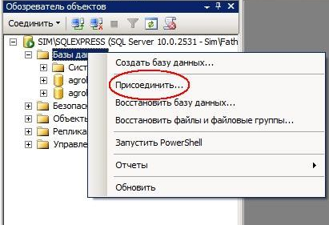
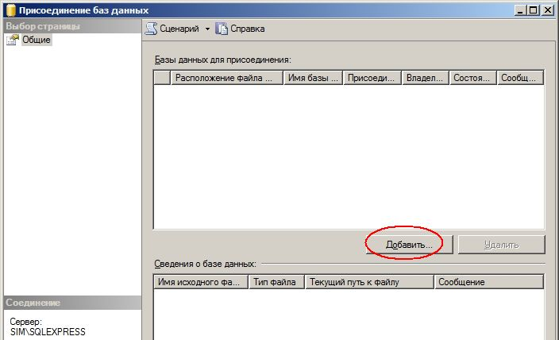
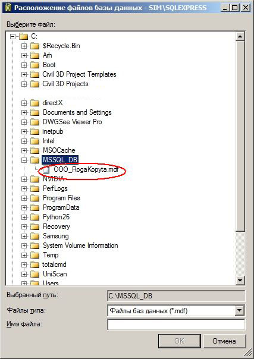
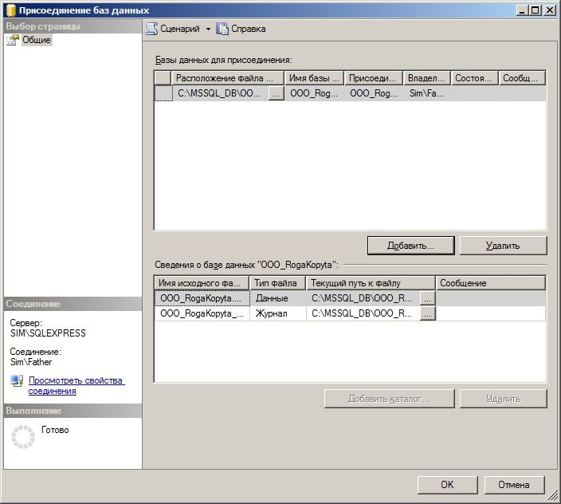
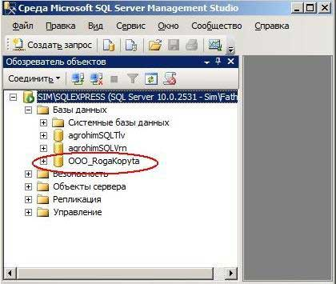

В предыдущих пунктах уже рассматривался вопрос о том, как создать новую базу данных в MS SQL Server. Однако, надо признать, что на практике создавать новые базы приходиться не так уж и часто. Чаще всего возникает необходимость просто подключиться к существующей базе данных (другой используемый термин - 'смонтировать' базу данных). Сделать это совсем нетрудно.
Как всегда, в SQL Server Management Studio тыкаем в Обозревателе объектов курсором в плюсик слева от ветки Базы данных и выбираем в контекстном меню по правой кнопке мыши Присоединить:

В следующей форме, жмём, естественно, на кнопку Добавить:

Далее совсем просто - выбираем локализацию нашей базы данных (файл с расширением mdf):

Снова попадаем в окно и видим форму с заполненными по умолчанию параметрами присоединения базы :

Осталось только на форме выше нажать кнопку OK.
